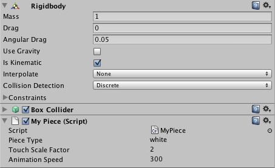
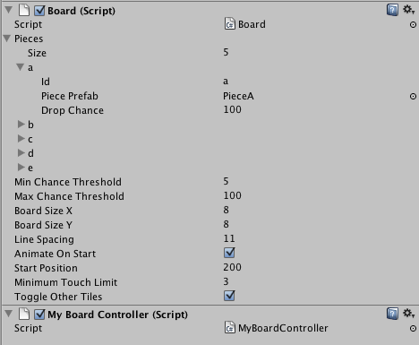

Introduction
This Unity3d package is a simple multiple tile matching system similar to games like Dungeon Raid, Puzzle Craft, and the like. Please check out the example project packaged with the system for a concrete look at how everything goes together.
The Board Controller
This class simply registers a callback, and allows the removed pieces to be post-processed. The piece type, and number of pieces taken are passed.
using UnityEngine;
using System.Collections;
public class MyBoardController : MonoBehaviour {
void Start() {
GetComponent().RegisterCallback(ProcessResult);
}
void ProcessResult(string type, int count) {
print("TYPE: " + type + ", COUNT: " + count);
}
}
Overriding the Piece Class
The first step is to create a new class that extends Piece. While this isn't required, it's useful for overriding the default animations.
In this example we are also overriding the DoAnimate method, and using iTween to drive our piece animations. The default behaviour simply does vector transforms, however the result is the same.
using UnityEngine;
using System.Collections;
using System.Collections.Generic;
public class MyPiece : Piece {
void Start() {
iTween.Init(gameObject);
}
public override void DoAnimate() {
SetAnimating(false); // since we are letting iTween handle animation, disable this
Hashtable tweenHash = new Hashtable();
tweenHash.Add("speed", animationSpeed);
tweenHash.Add("easetype", iTween.EaseType.linear);
tweenHash.Add("y", animationDest);
tweenHash.Add("oncomplete", "AnimationFinished");
iTween.MoveTo(gameObject, tweenHash);
}
}
Setting up the Project
The first step is to create our various board piece prefabs, and attach various scripts to them.
This system uses Unity's physics for touch detection, so we need to add a Rigidbody and Box Collider to our tile. Make sure to check Is Kinematic in the Rigidbody panel so that the engine doesn't have to recalculate the scene's physics each time a tile moves, and deselect Use Gravity since we want our own animations to control the objects.

- Piece Type: This can be any kind of identifying string which differentiates each piece.
- Touch Scale Factor: The number of units to decrease the size of the piece when it is touched.
- Animation Speed: The speed at which the pieces animate when they drop down to fill in the empty areas of the board.
Next we add the Board script and our custom BoardController script to either the Main Camera or some other prefab.

- Pieces: This is where all the pieces get registered. Specify the Id (Piece Type), the prefab, and a value between Min Chance Threshold and Max Chance Threshold which designates the chance the piece has to drop when new pieces are added to the board.
- Min Chance Threshold: The minimum chance a piece has to drop.
- Max Chance Threshold: The maximum chance a piece has to drop.
- Board Size X: The number of pieces wide the board is.
- Board Size Y: The number of pieces high the board is.
- Line Spacing: The size of a piece + additional space around it.
- Animate On Start: Whether the board shows up as is, or pieces fall from the top and fill it in on scene load.
- Start Position: Where new pieces start from along the Y axis.
- Minimum Touch Limit: The number of pieces that must be matched before they are removed from the board.
- Toggle Other Tiles: When a piece is selected, by default the other pieces on the board have their alpha cut in half. This can be overridden to do anything, such as change color, size, alpha, etc.